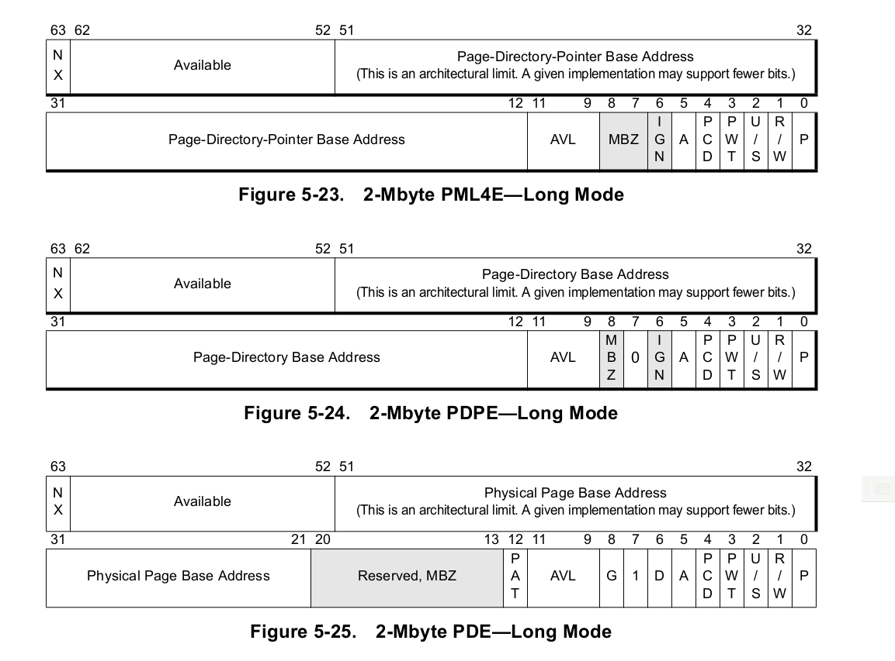

@see Documentation/x86/x86_64/mm.txt
ffff880000000000 - ffffc7ffffffffff (=64 TB) direct mapping of all phys. memory init_level4_pgt(272)->level3_ident_pgt(0)->level2_ident_pgt(512*2M=1G) ffffffff80000000 - ffffffffa0000000 (=512 MB) kernel text mapping, from phys 0 init_level4_pgt(511)->level3_kernel_pgt(510)->level2_kernel_pgt(256*2M=512M)
@see arch/x86/include/asm/page_64_types.h
#define __PAGE_OFFSET _AC(0xffff880000000000, UL) #define __PHYSICAL_START CONFIG_PHYSICAL_START // 0x1000000 = 16M #define __START_KERNEL_map _AC(0xffffffff80000000, UL) #define __START_KERNEL (__START_KERNEL_map + __PHYSICAL_START) // 0xffffffff81000000 // Kernel image size is limited to 512 MB #define KERNEL_IMAGE_SIZE (512 * 1024 * 1024) #define KERNEL_IMAGE_START _AC(0xffffffff80000000, UL)pagetable 
init_level4_pgt -> level3_ident_pgt -> level2_ident_pgt init_level4_pgt -> level3_kernel_pgt -> level2_kernel_pgt level2_fixmap_pgt, level1_fixmap_pgt, level2_spare_pgt编译时假设了vmlinux会被加载到内存16M处,如果不是,就需要修正pagetable.
关于PGE的一些说明
The processor invalidates the TLB whenever CR3 is loaded either explicitly or implicitly. After the TLB is invalidated, subsequent address references can consume many clock cycles until their translations are cached as new entries in the TLB. Invalidation of TLB entries for frequently-used or critical pages can be avoided by specifying the translations for those pages as global. TLB entries for global pages are not invalidated as a result of a CR3 load. Global pages are invalidated using the INVLPG instruction.接下来Enable了System Call和No Execute(如果支持的话).
Global-page extensions are controlled by setting and clearing the PGE bit in CR4 (bit 7). When CR4.PGE is set to 1, global-page extensions are enabled. When CR4.PGE is cleared to 0, global-page extensions are disabled. When CR4.PGE=1, setting the global (G) bit in the translation-table entry marks the page as global.
The INVLPG instruction ignores the G bit and can be used to invalidate individual global-page entries in the TLB. To invalidate all entries, including global-page entries, disable global-page extensions (CR4.PGE=0).
关于SCE
System-Call Extension (SCE) Bit. Setting this bit to 1 enables the SYSCALL and SYSRET instructions. Application software can use these instructions for low-latency system calls and returns in a non-segmented (flat) address space.
关于NXE,前边的pagetable的63位都是0,也就是说,map的内存里的代码是可执行的
No Execute (NX) Bit. Bit 63. This bit is present in the translation-table entries defined for PAE paging.到目前为止,我们的所有操作都没有用到栈,但栈一定要设的:
This bit controls the ability to execute code from all physical pages mapped by the table entry. For example, a page-map level-4 NX bit controls the ability to execute code from all 128M (512 × 512 × 512) physical pages it maps through the lower-level translation tables. When the NX bit is cleared to 0, code can be executed from the mapped physical pages. When the NX bit is set to 1, code cannot be executed from the mapped physical pages.
movq stack_start(%rip), %rsp
ENTRY(stack_start)
.quad init_thread_union+THREAD_SIZE-8
.word 0
我们看到,%rsp设到了init_thread_union的stack上. 这个后边再细说.